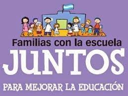

El Homeschool o Educación en Casa es una opción educativa en la que los padres deciden educar a los hijos fuera de las instituciones educativas tanto públicas como privadas. Esta es una opción que siguen alrededor de 2 millones de niños y jóvenes en Estados Unidos y por la que optan cada vez más personas en todo el mundo. En el caso de España la ley vigente establece que la educación debe ejercerse en colegios acreditados, siendo esta obligatoria hasta los 16 años, sin embargo, la ley no prohíbe de manera explícita el homeschooling. En países como Francia, Italia, Irlanda, Australia o Estados Unidos esta práctica está regulada y son miles las familias que optan por educar a sus hijos en casa con métodos innovadores. En Latinoamérica existe cierto escepticismo por el tema. Educar en familia es legal en Colombia, aunque no existe una regulación específica al respecto, la ley colombiana es lo suficientemente amplia e incluyente para optar sin temor por esta opción, el artículo 27 de la Constitución expresa: “El Estado garantiza las libertades de enseñanza, aprendizaje, investigación y cátedra”, mientras que el 68 establece que los padres tienen el derecho a escoger qué tipo de educación recibirán sus hijos. Según cifras de la Red Colombiana de Educación en Familia existen 8.000 familias que hacen homeschooling en todo el país. En Chile se estima que existen alrededor de 2.000 familias que optan por la educación en casa, y a pesar de que el número viene en crecimiento, podríamos decir que son pocas si lo comparamos con las familias europeas o norteamericanas que ya hoy en día lo hacen. En Perú al igual que en Argentina no se tienen estadísticas exactas sobre familias que practican el homeschooling. Sea en casa o en la escuela, lo primordial y esencial es tener en cuenta las necesidades y deseos de los niños, ya que son ellos mismos los que van a construir su futuro y a tomar las decisiones que marcarán su vida. Es responsabilidad de todos apoyar una educación igualitaria para todos, sea en un salón de clases o en la casa, para facilitar a los niños y jóvenes un certificado académico y una facilidad para incorporarse al sistema de enseñanza formal y finalmente, al sistema laboral, la economía y a la sociedad.